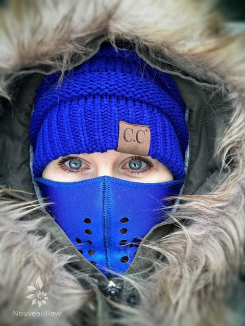
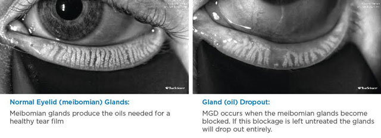

My Eye Health – Meibomian Gland Dysfunction

Do you ever have those moments in life where you are to the point to where you think that you just can’t handle one more thing… especially when it comes to your health?
For several years, I have been battling some pretty serious health issues. Each one was pulling and tugging for my attention. I don’t talk about them much, partly because I just don’t have the energy to do so and shoot, there are far better things for me to share… like my kitchen creations.
Today, I decided that I wanted to share something with you and that is eye health. And how it is something that shouldn’t be taken for granted or ignored even when “small” issues arise.
Over a year ago, I started to notice some white dots forming inside my eyelids. It’s amazing all the things you inspect when you have an x10 magnifying mirror in front of you. :) I was like, ooooh, what are those?! But I soon put them out my mind, and since I couldn’t see them when I passed by a mirror, I sort of forgot about them.
Not too long after these bumps appeared, I started to experience a bad case of dry eyes. I finally went to the eye doctor and was instructed to do warm eye compresses and take Omega-3 capsules. I did, but it never really helped. During this same time, I was dealing with some other health issues that took priority, so I just dealt with the dry eyes.
During the day they either burned, watered, itched, ached, were bloodshot or had a glassy feeling which blurred my vision. It was a crapshoot what they were going to do from day to day. The night-time was the worst. I would fall asleep with a warm eye compress on them but would be woken up anywhere from two to five times throughout the night with eye pain. I am guessing that the rapid eye movement that we all experience while sleeping caused my eyes to feel like they were being sand papered. Mr. Sandman wasn’t bringing me a dream. Instead, it was a painful nightmare. (this song always haunts me once I say the word, Sandman. I couldn’t resist sharing… that way it will be stuck not only in my head but yours too. :)
Видео на внешнем сайте (нужен интернет)
They hurt to keep closed; they hurt to be open. Needless to say, this leaves me sleep deprived almost every night. This has gone on for almost a year and still does to this day. Finally, I had enough. I made an eye appointment. I skipped seeing my Optometrist and went to an Ophthalmologist. After a short exam, I was told I had chronic dry eye and was given a prescription for three different eye drops. When I asked what caused it, he nonchalantly said, “Being a woman and age, see you in six weeks.” And out the door, he went. And this is our health care system? Sigh.
The prescribed drops combined together cost $1,825!!! My insurance covered a good chunk of it but I was still left holding a bill for over $400 and three tiny dropper bottles and three more small boxes of other “special drops,” needless to say, I was sick to my stomach. My days were filled with a schedule of administering eye drops spaced out from morning till night. I did them faithfully for six weeks and then returned to the Ophthalmologist who had no good news to report. Nothing worked, nothing helped. Bob threw out an idea of seeing another specialist who did a procedure called Lipiflow, but he said to continue the eye drops he gave me and check back later. I later found out that the prescribed eye drops didn’t work because he misdiagnosed my eyes. Argh.
Bless Bob’s heart… he went to battle for me. We knew it was going to take further investigating to figure out what was really going on. Bob found a Lipiflow specialist in Portland. He read, researched, and made many phone calls. Me… I temporarily “checked out.” I was was just tuckered out mentally. I just couldn’t handle another doctor, another procedure…so I sat back and let Bob help me with this one. Thank God for those who hold us up when we can’t muster up the strength to do it ourselves.
Sorry if the following photo is too graphic, but it’s time you met your meibomian glands.

This is getting quite lengthy and I value your time, so I will try to reduce my three-hour eye appointment to just a few more paragraphs. :)
The appointment started with a high contrast digital corneal lipid layer analysis (LipiView®). The photo to the right is NOT of my eyes. But I have photos of what my glands look like and they don’t look anything like the left eye which is healthy. With this test, followed by a few others, I was diagnosed with Meibomian Gland Dysfunction, which is irreversible (gulp, nobody wants to ever hear those words). I have lost over 60% of my Meibomian glands. We have about 25 to 40 meibomian glands in the upper eyelids and 20 to 30 in the lower eyelids. I only have 5-10 healthy ones in my lower lids. What Bob and I can’t understand is why this simple test isn’t done as part of a standard eye exam! Had this been done when I first complained…. (I fall silent to the failings of our health care system)
The function of these glands is to secrete oils onto the surface of the eye. These oils help keep the tears from evaporating too quickly. I provided a link down below to a short video that explains more about why we need healthy meibomian glands. Please watch it.
Symptoms of MGD are:
- Dryness
- Burning
- Itching
- Stickiness/ Crustiness
- Watering
- Light Sensitivity
- Red Eyes
- Foreign Body Sensation
- Chalazion/Styes
- Intermittent Blurry Vision
What causes it?
Genetics play a role, age increases the chances, and so does computer work (Healthy people blink 10 to 15 times per minute. While working at on a computer, we blink up to a 60% less), eye makeup, and other things are contributing causes. WOMEN… please take to heart…. Eyeliner and mascara can clog the openings of meibomian glands. Never wear eyeliner on the inner lower or upper eye lid, wash your eyes thoroughly every night before bed and if possible, stop wearing eye makeup! I know, I know… another time I want to talk more about this.
My treatment:
In office:
- High contrast digital corneal lipid layer analysis (LipiView®)
- Had a green dye squirted in my eyes… can’t remember why.
- Did some standard visual testings.
- The doctor did what is called, Meibomian gland probing. He numbed my eyes and used a hand-held instrument to probe and dilate the openings of my meibomian glands near the base of my eyelashes. Basically, it was like a huge needle that he scrapped over and over on the inside of my lower lids. He said it would tickle. There wasn’t any giggling taking place here… it felt like someone was running a sharp needle on the tender skin of your inner eyelid!
- They numbed my eyes again and did the Lipiflow treatment. This procedure applies sufficient heat to the inner eyelids to melt waxy deposits in the meibomian glands. At the same time, it applies pulsed pressure to the eyelid to open and thoroughly express the contents of the glands. Click here to watch a great 4-minute video… it explains it really well. (click here) It didn’t hurt, but the sensations were startling. I did get sick to my stomach but I think that it was just nerves. Bob held my hand and sang to me through the process. What a great man.
My homework:
- Continue taking Omega-3 supplements. Taking them may help decrease the risk of future episodes of meibomian gland dysfunction. It appears these essential fatty acids may help suppress inflammation associated with MGD and decrease the risk of waxy build-up within the meibomian glands.
- Daily warm compresses. When the eyelids are heated, they will automatically start to produce more oil. This will then get rid of any oil in the glands that has solidified and caused a blockage.
- Eye lid cleaning two times a day. A lid scrub helps to get rid of debris, bacteria, and oil, while at the same time stimulating oil production. I was given a prescription eye cleaner that I am to use to clean the base of the lid line.
- Blinking exercises. Four times a day. I am to blink ten times in a row with purpose! Meaning to blink hard, lightly squeezing the eyes upon closing. I catch Bob doing them now. :)
- Return in four weeks to see if we are maintaining what glands I have left.
Why am I sharing this with you?
I think we can all agree that our eye health is important and nothing to take for granted. I wanted to share my experience with you and encourage you to take your eye health into your own hands by having proper eye exams. Check your local area and see if they do LipiView. (unfortunately not a cheap treatment) However experienced eye doctors can see the glands without going through the whole process. Catching the blockages and reducing atrophy of these glands can prevent eye issues which are not reversible. So here is the takeaway…
- Have your glands checked on a regular basis.
- If you work a lot on a computer, take eye breaks, and focus on blinking more.
- For those who wear eye makeup, decrease the amount, keep it away from the base of your eyelashes, don’t put eyeliner on the inside of your lower lid. Wash your eyes thoroughly making sure to remove all makeup before going to bed.
- Be aware when you are exposed to air conditioning, fans, heating systems, as they can have a negative influence on the tear film quality.
- Never run with sharp objects like scissors… this doesn’t pertain to gland dysfunction but good advice none the less. :P
Well, I am going to end it here for now. My eyes are burning and glassy from typing. Maybe I will do a warm eye compress and then create a recipe. That sounds like more fun. Thank you for taking the time in reading all of this. It means a lot to me because I care about you and your eye health. :) Blessings, amie sue
© AmieSue.com